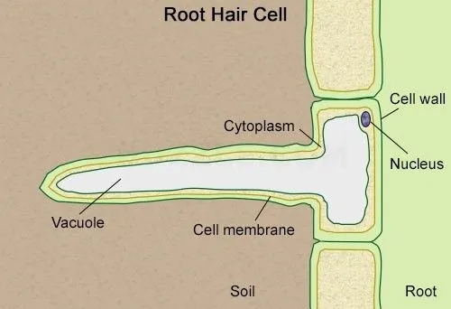

Roots are at the base of a plant. They are the largest part of a plant. They are one of the most important parts of a plant. They supply water, minerals and nutrients to the plant. They also anchor the plant and keep it in place.
Roots use special cells, called Root Hair Cells, to suck up water. They can also absorb minerals and nutrients from the soil.
